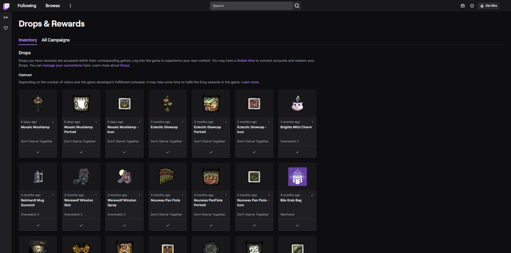
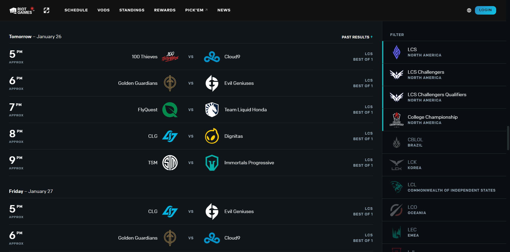
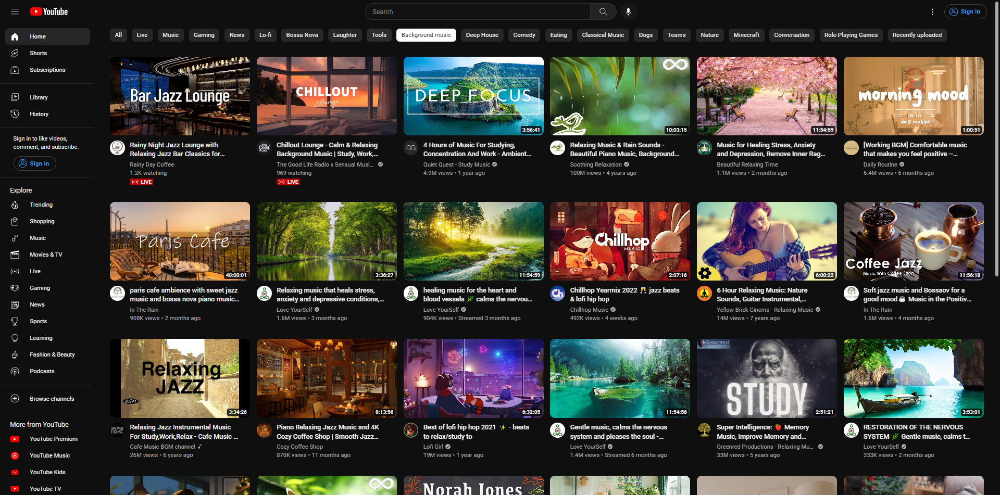
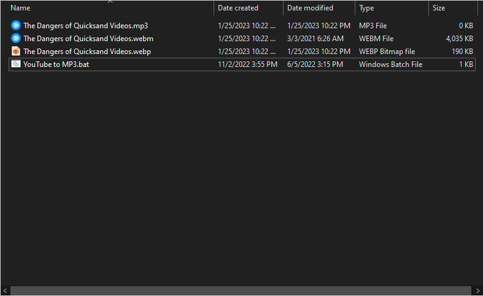
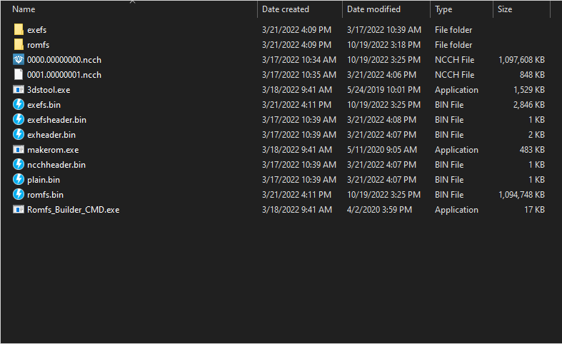
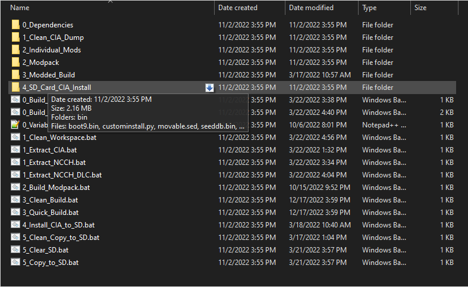
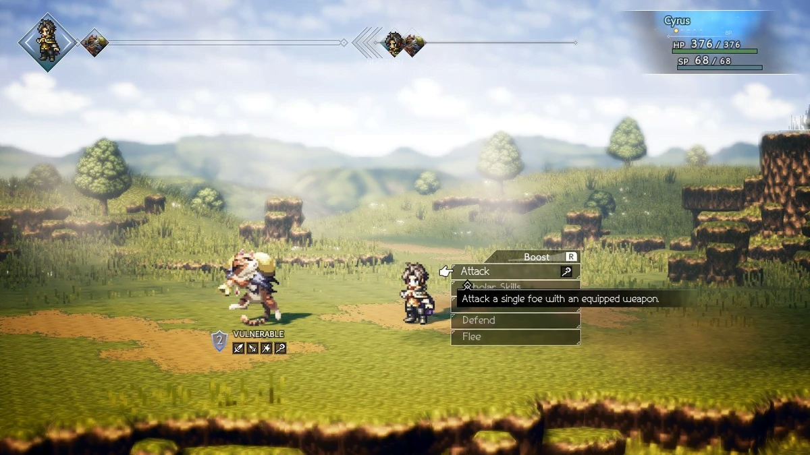

Personal Projects
Various Userscripts


Lightweight userscripts designed to help with repetitive tasks in some websites. All made in JS and tested with the TamperMonkey extension.
YouTube Download Scripts


A downloader for any YouTube video, in MP3 or MP4 formats. Made using Windows Batch files for simplicity and speed.
3DS Developer Area Template


A simple template for decompiling, modding, and recompiling 3DS games. Batch files provide compatibility between many tools developed by different people.
Octopath Traveler Mods

A collection of mods for Octopath Traveler. Python scripts were able to flexibly edit the data within these compiled files.